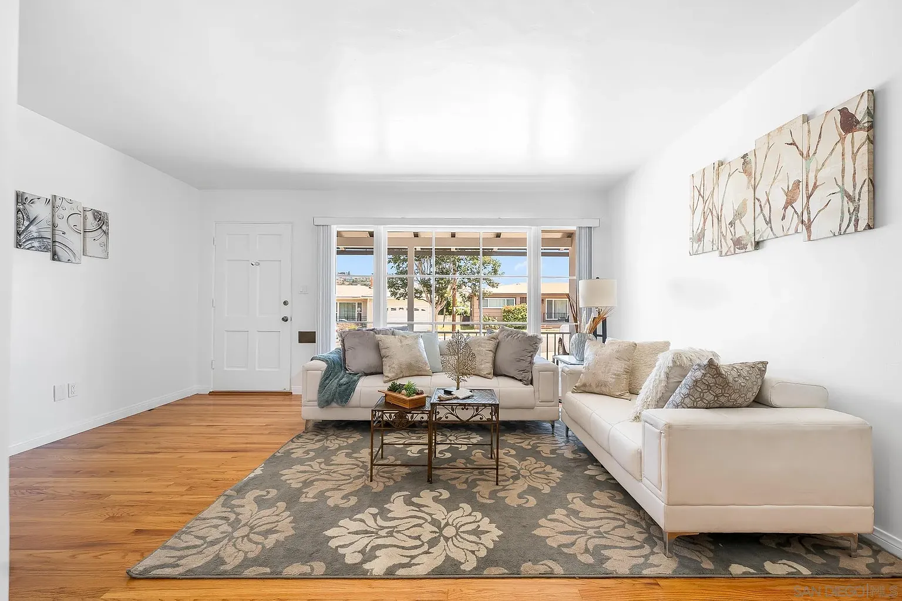

Why choose Staged4Sale for San Diego County's diverse luxury markets?
San Diego County represents the ultimate in Southern California lifestyle diversity — from the ultra-luxury estates of La Jolla and Rancho Santa Fe to the family-friendly beach communities of Encinitas and Carlsbad, from the wine country elegance of Temecula to the Spanish village charm of San Clemente. This extraordinary variety requires staging expertise that can adapt to any market, any architectural style, and any buyer demographic. Our team brings deep knowledge of each community's unique character, buyer expectations, and lifestyle appeal, ensuring every property is staged to maximize its appeal within its specific market context.
"We understand that staging a beachfront cottage in Encinitas requires a completely different approach than staging an equestrian estate in Rancho Santa Fe — and we excel at both."
How do you stage for San Diego County's incredible buyer diversity?
San Diego County attracts the most diverse luxury buyer base in California: military families seeking coastal living, tech executives relocating from Silicon Valley, international buyers drawn to year-round perfect weather, retirees choosing luxury coastal communities, young families prioritizing top schools and beach access, and ultra-high-net-worth individuals seeking privacy and prestige. Our staging approach considers each property's target demographic while showcasing the broader San Diego lifestyle that attracts buyers from around the world — outdoor living, sophisticated dining, cultural amenities, and that ineffable California coastal charm.
San Diego County's appeal spans all demographics: Military precision meets surf culture, international sophistication blends with family-friendly communities, and luxury buyers discover both prestige and authentic California lifestyle.
What makes San Diego County's real estate market so unique?
San Diego County offers something impossible to replicate: 70 miles of pristine coastline, year-round 72-degree weather, world-class universities and research institutions, major military presence, proximity to international borders, wine country, desert, mountains, and beaches — all within one county. From $500,000 condos to $50+ million oceanfront estates, the market serves every lifestyle and budget while maintaining that distinctive San Diego sophistication. Our staging capitalizes on these unique advantages, showcasing how each property connects to the broader San Diego lifestyle.
What's the staging investment across San Diego County's diverse markets?
San Diego County's market diversity requires flexible staging approaches and investments. From family homes in Vista starting at $3,000–$8,000 to ultra-luxury estates in La Jolla and Rancho Santa Fe requiring $15,000–$30,000+ (NAR), we scale our approach to match market expectations. Coastal properties often require premium furnishings that withstand ocean air while showcasing beach lifestyle, while inland wine country estates need sophisticated pieces that complement architectural grandeur.
Across all San Diego County markets, professional staging consistently delivers 15-35% higher sale prices while dramatically reducing time on market — crucial advantages in competitive markets from downtown San Diego to North County luxury enclaves.
How does staging perform across San Diego's year-round market?
San Diego County's perfect climate creates consistent year-round buyer activity, unlike seasonal markets elsewhere. However, spring and early summer showcase outdoor living at its peak — perfect for highlighting beach access, golf course views, and the indoor-outdoor lifestyle that defines San Diego living. Our staging emphasizes these lifestyle advantages regardless of season, ensuring properties always appear ready for the California dream that draws buyers from around the world.
Premium staging in San Diego County often generates multiple offers from local, national, and international buyers who recognize the irreplaceable combination of perfect weather, coastal access, and sophisticated amenities.
Ready to showcase your San Diego County property's lifestyle appeal?
Let's create staging that captures the sophisticated diversity and year-round appeal that makes San Diego County America's Finest
See Our San Diego Staging Work

Rolando Bungalow
This mid-century Rolando bungalow was staged to balance its original charm with a fresh, move-in-ready feel. We used neutral tones and light furniture to enhance flow and showcase the refinished hardwood floors, while minimal accessories let the distinctive architectural details shine. The result emphasized the home's turnkey character and potential for relaxed, comfortable living.
View Full ProjectMarkets We Serve Throughout San Diego County
From ultra-luxury coastal estates to family-friendly communities and wine country elegance, we provide expert staging throughout America's Finest County.
North County Coastal Communities
Oceanside
Military heritage meets surf culture in this vibrant beach city with diverse housing options and family-friendly appeal.
Carlsbad
Sophisticated beach town living with luxury resorts, family communities, and pristine coastal charm.
Encinitas
Yoga capital and spiritual sanctuary where coastal soul meets mindful living and artistic community.
Solana Beach
Sophisticated surf town where legendary breaks meet upscale dining and coastal elegance.
Del Mar
Racing heritage luxury with "Where the Turf Meets the Surf" prestige and ultra-premium coastal living.
North County Inland Communities
Escondido
Family-focused communities with excellent schools, wine country gateway, and diverse housing options.
San Marcos
College town energy meets family community charm with master-planned neighborhoods and lake views.
Poway
The "City in the Country" offering family-friendly living with rural charm and excellent schools.
Vista
Diverse community with affordable family options, cultural diversity, and convenient North County location.
Fallbrook
Avocado capital charm with rural elegance, agricultural heritage, and unique small-town sophistication.
Bonsall
Rural paradise with equestrian estates, country living, and serene natural beauty.
Ultra-Luxury Prestige Communities
Adjacent Premium Markets We Serve
We provide comprehensive home staging services throughout San Diego County and adjacent premium markets, with expertise in every community's unique character and buyer expectations.